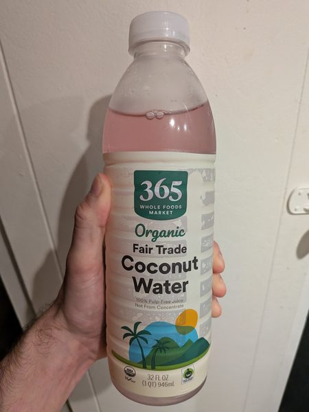

November 2026 · 32 fl oz (946 mL) · Still · Thailand · Unpasteurized · No Added Sugar · USDA Organic · Fair Trade
Ranked 4th of 43 coconut waters I have scored · below Kirkland Organic (7.9) · above Sprouts Organic (7.8). See the full ranking.
I'm almost positive they're using the same supplier as Sprouts. Both are organic unpasteurized coconut waters from Thailand that have a very similar flavor profile. But I have no way to prove this.
Delicious and floral, with a fresh punch. This is a really solid option with no additives. Nice and pink from all the oxides. No complaints. See also: Sprouts Organic.
These coconuts are grown in habitats threatened by palm oil deforestation. If you find this site useful, consider donating to the Rainforest Action Network.